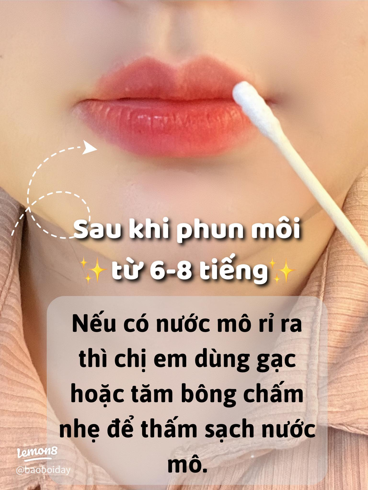

7 Điều Cần Kiêng Sau Phun Môi Để Môi Hồi Phục Đẹp Và Lên Màu Tự Nhiên
Sau khi phun môi, ngoài tay nghề của kỹ thuật viên thì việc chăm sóc tại nhà cũng ảnh hưởng đến quá trình hồi phục. Chính vì vậy, rất nhiều khách hàng tìm kiếm kiêng sau phun môi hoặc sau phun môi cần kiêng gì để tránh những sai lầm không đáng có.
Thực tế, mỗi người có cơ địa khác nhau nên tốc độ hồi phục cũng sẽ khác nhau. Tuy nhiên, việc hạn chế những tác động không cần thiết lên môi và làm theo hướng dẫn của kỹ thuật viên sẽ giúp bạn yên tâm hơn trong suốt quá trình này.
Trong bài viết dưới đây, ELLY PMU sẽ chia sẻ 7 điều bạn nên lưu ý sau khi phun môi.
Vì Sao Cần Kiêng Sau Phun Môi?
Sau khi thực hiện, môi cần thời gian để hồi phục tự nhiên. Đây là giai đoạn môi khá nhạy cảm nên việc chăm sóc đúng cách sẽ góp phần hỗ trợ môi hồi phục, giữ môi sạch, hạn chế tác động từ bên ngoài và tạo điều kiện để màu môi ổn định hơn.
1. Hạn Chế Chạm Tay Lên Môi
Nhiều người có thói quen sờ môi để kiểm tra màu hoặc tình trạng đang bong. Điều này có thể làm tăng nguy cơ đưa vi khuẩn từ tay lên môi.
Nếu cần vệ sinh hoặc dưỡng môi, hãy thực hiện theo đúng hướng dẫn của kỹ thuật viên.
2. Không Tự Ý Bóc Lớp Bong
Trong quá trình hồi phục, môi có thể bong tự nhiên. Bạn không nên dùng tay bóc, cắn môi hoặc chà xát mạnh. Hãy để lớp bong diễn ra theo quá trình tự nhiên.
3. Hạn Chế Các Tác Động Mạnh Lên Môi
Trong thời gian đầu, bạn nên hạn chế chà xát môi, cắn môi, hôn khi môi còn nhạy cảm và các tác động trực tiếp khác lên vùng môi.
Nếu bạn chưa biết tình trạng môi của mình phù hợp với màu nào hoặc cần hướng dẫn chăm sóc chi tiết, đội ngũ ELLY PMU luôn sẵn sàng hỗ trợ tư vấn màu môi, kiểm tra tình trạng môi và hướng dẫn chăm sóc sau khi thực hiện.
4. Dưỡng Môi Theo Đúng Hướng Dẫn
Không nên tự ý thay đổi sản phẩm dưỡng môi nếu chưa được tư vấn. Việc dưỡng môi đúng cách sẽ giúp môi duy trì độ ẩm tốt hơn trong quá trình hồi phục.
5. Giữ Môi Luôn Sạch
Sau khi ăn uống, bạn nên vệ sinh môi nhẹ nhàng theo hướng dẫn của kỹ thuật viên. Điều này giúp môi luôn sạch và tạo điều kiện thuận lợi cho quá trình hồi phục.

6. Uống Đủ Nước
Việc bổ sung đủ nước giúp cơ thể duy trì trạng thái khỏe mạnh và hỗ trợ quá trình hồi phục tự nhiên. Nếu được hướng dẫn sử dụng ống hút trong giai đoạn đầu, bạn nên làm theo chỉ dẫn của kỹ thuật viên.
7. Tái Khám Theo Lịch Hẹn
Nếu cơ sở thực hiện có lịch tái khám, bạn nên đến đúng hẹn để kỹ thuật viên kiểm tra quá trình hồi phục và giải đáp những thắc mắc nếu có.
Những Sai Lầm Thường Gặp Sau Khi Phun Môi
Chỉ Quan Tâm Đến Màu Môi
Nhiều người chỉ chú ý môi đã lên màu đẹp hay chưa mà quên mất việc chăm sóc hằng ngày.
Tự Áp Dụng Mẹo Trên Mạng
Không phải mọi hướng dẫn trên Internet đều phù hợp với tình trạng môi của bạn. Hãy ưu tiên làm theo hướng dẫn từ kỹ thuật viên đã trực tiếp thực hiện.
Quá Lo Lắng Khi Môi Bong
Đây là một phần của quá trình hồi phục ở nhiều người. Nếu có dấu hiệu bất thường, hãy liên hệ cơ sở thực hiện để được hỗ trợ.
Checklist Sau Phun Môi
Câu Hỏi Thường Gặp
Bạn nên hạn chế các tác động trực tiếp lên môi, chăm sóc theo hướng dẫn của kỹ thuật viên và giữ môi sạch trong quá trình hồi phục.
Nên tránh tự bóc lớp bong, chạm tay lên môi nhiều lần, chà xát mạnh và tự dùng sản phẩm chưa được tư vấn.
Bạn nên hạn chế chạm tay lên môi. Nếu cần vệ sinh hoặc dưỡng môi, hãy rửa tay sạch và làm theo hướng dẫn.
Thời gian hồi phục khác nhau tùy cơ địa và cách chăm sóc. Bạn nên theo dõi môi và tái khám theo lịch hẹn nếu có.
Chăm sóc đúng hướng dẫn, giữ môi sạch, dưỡng môi phù hợp và hạn chế các tác động mạnh lên môi là những yếu tố quan trọng.
Nếu còn thắc mắc về cách chăm sóc sau phun môi, hãy liên hệ ELLY PMU để được kỹ thuật viên tư vấn trực tiếp và hướng dẫn theo tình trạng môi hiện tại.
Kết Luận
Kiêng sau phun môi không có nghĩa là bạn phải quá lo lắng hay áp dụng những mẹo chưa được kiểm chứng. Điều quan trọng nhất là chăm sóc môi đúng cách, hạn chế các tác động không cần thiết và tuân thủ hướng dẫn của kỹ thuật viên. Điều này sẽ giúp quá trình hồi phục diễn ra thuận lợi và môi lên màu tự nhiên hơn.